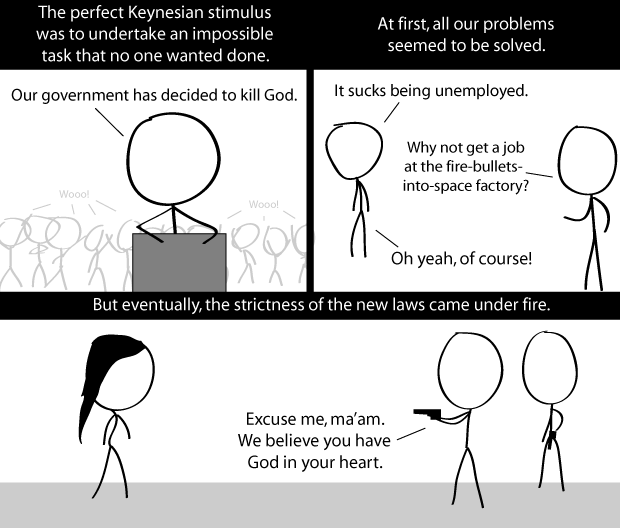

Comic JK 690
When I Feel Like It
⇤
<
?
>
⇥

⇤
<
?
>
⇥
Forum
.
RSS
.
Digg
.
Facebook
.
Reddit
.
Twitter
.
Stumbleupon
recobered text from: lukeshu.ath.cx/1/comicjk/viewer.php?comic=690&date=1306785834 Enter your thoughts on number 690 here. Please, no spamming, trolling, or stimulating. Many successful governments have also been built around your anus. Background Wooo! > Second guy from the left doesn't seem all "Wooo!" about it >> Of course he is, he's so happy he's hugging himself. >>>thought these were Venn diagrams... >>>>with legs?!? >>>>>"It's literally your only purpose!" What was the impossible task the Romans were up to? >Being Roman. >>And gay >>>Killing god. There's a book about it, it's pretty well known. >>>>( must resist temptation to quote Monty Python... ) >Waging war on the rest of the world? Maintaining the upper class's 100% leisure time? >>I very much doubt *any* class generally had "100% leisure time"... especially the females of that class... >>>Well, if you define "upper class" as "those who had 100% leisure time"... Is it just me, or does the last guy on the right look like he's "playing with his pitol," if-ya-know-what-i-mean? >Did you mean pistol? >>If you know what I mean >>> The gun is merely in its holster >>>> i.e. they're detachable and dual-purpose in sci-fi-godless future times. That girl is curvalicious? > indeed >> either that, or has some pretty severe back trouble